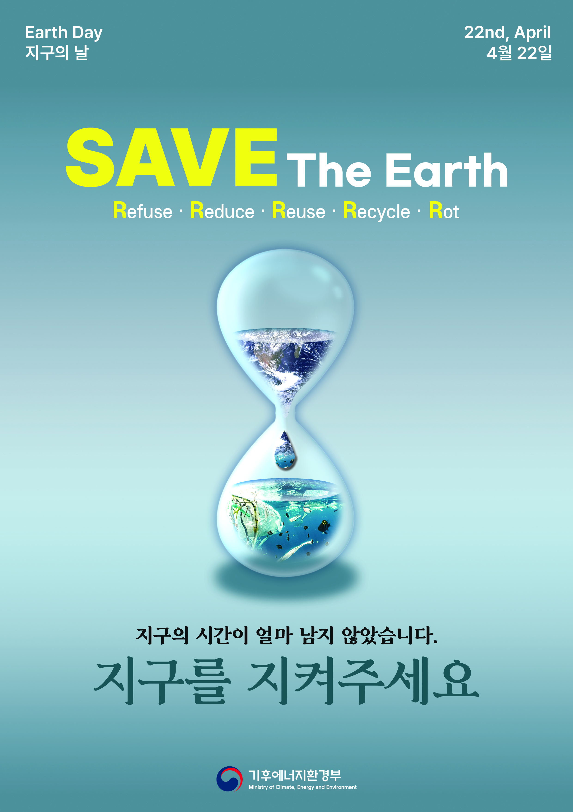

환경문제를 좀 더 시각적으로 임팩트 있게 보여줄 수 없을까? 어떻게 하면?
How can we make environmental issues more visually impactful?
지구에게 남은 시간을,
모래시계에 담다.
모래시계의 모래는 아주 천천히, 조금씩 떨어진다.
그 작은 변화를 매 순간 알아차리기는 어렵지만,
시간이 흐르면 결국 모든 모래가 떨어지고 만다.
지구의 시간도 이와 같다고 생각했다. 우리가 체감하지 못하는 순간에도 환경은 조금씩 변화하고, 지구에게 남은 시간은 계속 줄어들고 있다.
이러한 모습을 모래시계 속 지구로 표현해, 눈에 보이지 않는 시간의 흐름과 환경문제의 긴급성을 시각적으로 전달하고자 했다.
PROJECT CREDITS
SAVE The Earth
Public Campaign Poster
포스터 제작 수업 과제
Concept · Poster Design
Adobe Photoshop
SAVE The Earth

보이지 않는 시간을, 보이는 경고로.
환경문제는 매 순간 극적인 변화로 나타나지 않는다.
그렇기에 우리가 미처 알아차리지 못하는 시간의 흐름을,
하나의 강렬한 이미지로 전달하고자 했다.
HOURGLASS
사라지는 시간
모래시계는 조금씩 줄어들지만 결국 끝에 도달하는 지구의 시간을 상징한다. 지구를 모래시계 안에 배치해 환경문제의 긴급성을 표현했다.
TYPOGRAPHY
SAVE The Earth
노란색 SAVE를 강하게 강조해 가장 먼저 시선이 닿도록 했다. 포스터의 경고 메시지를 단순한 설명이 아닌 행동을 촉구하는 문장으로 전달한다.
COLOR
대비와 집중
차가운 블루 계열을 중심으로 지구와 환경의 이미지를 연결하고, 따뜻한 노란색을 대비시켜 핵심 메시지에 시선을 집중시켰다.